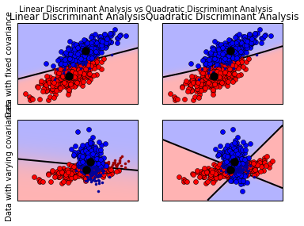
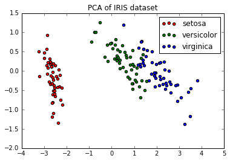
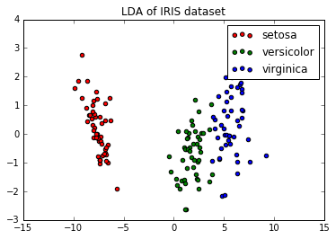
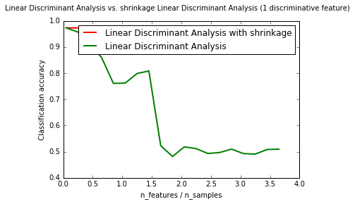
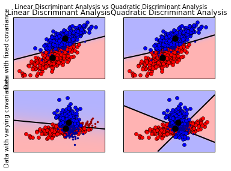
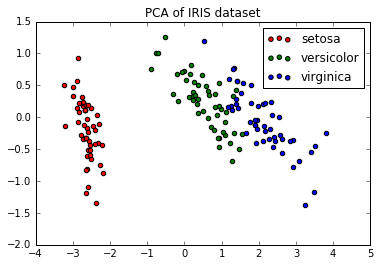
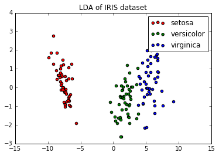
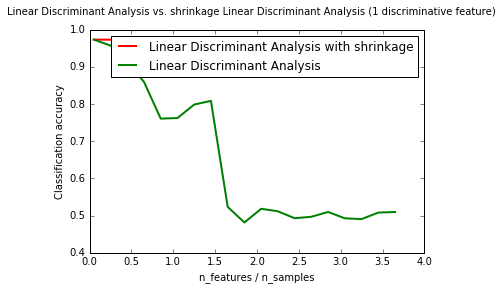

线性判别分析和二次判别分析是两个经典的分类器，就像他们的名字所表示的一样，一个是用线划分，另一个是二次判别面来划分。

print (__doc__ )
from scipy import linalg
import numpy as np
import matplotlib.pyplot as plt
import matplotlib as mpl
from matplotlib import colors
% matplotlib inline
from sklearn.discriminant_analysis import LinearDiscriminantAnalysis
from sklearn.discriminant_analysis import QuadraticDiscriminantAnalysis
###############################################################################
# colormap
cmap = colors.LinearSegmentedColormap(
' red_blue_classes' ' red' 0 , 1 , 1 ), (1 , 0.7 , 0.7 )],
' green' 0 , 0.7 , 0.7 ), (1 , 0.7 , 0.7 )],
' blue' 0 , 0.7 , 0.7 ), (1 , 1 , 1 )]})
plt.cm.register_cmap(cmap = cmap)
def dataset_fixed_cov ():
''' Generate 2 Gaussians samples with the same covariance matrix''' = 300 , 2
np.random.seed(0 )
C = np.array([[0 ., - 0.23 ], [0.83 , .23 ]])
X = np.r_[np.dot(np.random.randn(n, dim), C ),
np.dot(np.random.randn(n, dim), C ) + np.array([1 , 1 ])]
y = np.hstack((np.zeros(n), np.ones(n)))
return X , y
def dataset_cov ():
''' Generate 2 Gaussians samples with different covariance matrices''' = 300 , 2
np.random.seed(0 )
C = np.array([[0 ., - 1 .], [2.5 , .7 ]]) * 2 .
X = np.r_[np.dot(np.random.randn(n, dim), C ),
np.dot(np.random.randn(n, dim), C .T ) + np.array([1 , 4 ])]
y = np.hstack((np.zeros(n), np.ones(n)))
return X , y
###############################################################################
# plot functions
def plot_data (lda , X , y , y_pred , fig_index ):
splot = plt.subplot(2 , 2 , fig_index)
if fig_index == 1 :
plt.title(' Linear Discriminant Analysis' ' Data with fixed covariance' elif fig_index == 2 :
plt.title(' Quadratic Discriminant Analysis' elif fig_index == 3 :
plt.ylabel(' Data with varying covariances' = (y == y_pred) # True Positive
tp0, tp1 = tp[y == 0 ], tp[y == 1 ]
X0 , X1 = X [y == 0 ], X [y == 1 ]
X0_tp , X0_fp = X0 [tp0], X0 [~ tp0]
X1_tp , X1_fp = X1 [tp1], X1 [~ tp1]
# class 0: dots
plt.plot(X0_tp [:, 0 ], X0_tp [:, 1 ], ' o' color = ' red' X0_fp [:, 0 ], X0_fp [:, 1 ], ' .' color = ' #990000' # dark red
# class 1: dots
plt.plot(X1_tp [:, 0 ], X1_tp [:, 1 ], ' o' color = ' blue' X1_fp [:, 0 ], X1_fp [:, 1 ], ' .' color = ' #000099' # dark blue
# class 0 and 1 : areas
nx, ny = 200 , 100
x_min, x_max = plt.xlim()
y_min, y_max = plt.ylim()
xx, yy = np.meshgrid(np.linspace(x_min, x_max, nx),
np.linspace(y_min, y_max, ny))
Z = lda.predict_proba(np.c_[xx.ravel(), yy.ravel()])
Z = Z [:, 1 ].reshape(xx.shape)
plt.pcolormesh(xx, yy, Z , cmap = ' red_blue_classes' norm = colors.Normalize(0 ., 1 .))
plt.contour(xx, yy, Z , [0.5 ], linewidths = 2 ., colors = ' k' # means
plt.plot(lda.means_[0 ][0 ], lda.means_[0 ][1 ],
' o' color = ' black' markersize = 10 )
plt.plot(lda.means_[1 ][0 ], lda.means_[1 ][1 ],
' o' color = ' black' markersize = 10 )
return splot
def plot_ellipse (splot , mean , cov , color ):
v, w = linalg.eigh(cov)
u = w[0 ] / linalg.norm(w[0 ])
angle = np.arctan(u[1 ] / u[0 ])
angle = 180 * angle / np.pi # convert to degrees
# filled Gaussian at 2 standard deviation
ell = mpl.patches.Ellipse(mean, 2 * v[0 ] ** 0.5 , 2 * v[1 ] ** 0.5 ,
180 + angle, color = color)
ell.set_clip_box(splot.bbox)
ell.set_alpha(0.5 )
splot.add_artist(ell)
splot.set_xticks(())
splot.set_yticks(())
def plot_lda_cov (lda , splot ):
plot_ellipse(splot, lda.means_[0 ], lda.covariance_, ' red' 1 ], lda.covariance_, ' blue' def plot_qda_cov (qda , splot ):
plot_ellipse(splot, qda.means_[0 ], qda.covariances_[0 ], ' red' 1 ], qda.covariances_[1 ], ' blue' ###############################################################################
for i, (X , y) in enumerate ([dataset_fixed_cov(), dataset_cov()]):
# Linear Discriminant Analysis
lda = LinearDiscriminantAnalysis(solver = " svd" store_covariance = True )
y_pred = lda.fit(X , y).predict(X )
splot = plot_data(lda, X , y, y_pred, fig_index = 2 * i + 1 )
plot_lda_cov(lda, splot)
plt.axis(' tight' # Quadratic Discriminant Analysis
qda = QuadraticDiscriminantAnalysis(store_covariances = True )
y_pred = qda.fit(X , y).predict(X )
splot = plot_data(qda, X , y, y_pred, fig_index = 2 * i + 2 )
plot_qda_cov(qda, splot)
plt.axis(' tight' ' Linear Discriminant Analysis vs Quadratic Discriminant Analysis' 图上展示了线性判别和二次判别的分类边界，最下面的一行图显示，线性判别只能找到线性的分界线，而二次判别可以找到两条分界线，因此更为灵活。
线性判别分析可用于监督学习的降维，通过将数据映射到一个能最大限度分类的有方向的子空间来实现。输出的维度必然比类别数目小，因此这是一个一般意义上相当强悍的降维方法，并且只有在存在多个类时有用。
下面是比较线性判别分析和主成分分析的降维作用的例子。


print (__doc__ )
import matplotlib.pyplot as plt
from sklearn import datasets
from sklearn.decomposition import PCA
from sklearn.discriminant_analysis import LinearDiscriminantAnalysis
% matplotlib inline
iris = datasets.load_iris()
X = iris.data
y = iris.target
target_names = iris.target_names
pca = PCA(n_components = 2 )
X_r = pca.fit(X ).transform(X )
lda = LinearDiscriminantAnalysis(n_components = 2 )
X_r2 = lda.fit(X , y).transform(X )
# Percentage of variance explained for each components
print (' explained variance ratio (first two components): %s ' % str (pca.explained_variance_ratio_))
plt.figure()
for c, i, target_name in zip (" rgb" 0 , 1 , 2 ], target_names):
plt.scatter(X_r [y == i, 0 ], X_r [y == i, 1 ], c = c, label = target_name)
plt.legend()
plt.title(' PCA of IRIS dataset' for c, i, target_name in zip (" rgb" 0 , 1 , 2 ], target_names):
plt.scatter(X_r2 [y == i, 0 ], X_r2 [y == i, 1 ], c = c, label = target_name)
plt.legend()
plt.title(' LDA of IRIS dataset' LDA和QDA都可以由简单的概率模型衍生出来，对于每个k都满足条件概率分布 P(X|y=k) 。可以通过贝叶斯公式来得到预测。
P(y=k | X) = P(X | y=k) P(y=k)}/P(X) = P(X | y=k) P(y = k)/ P(X | y=l)/P(y=l)}并且我们选择能最大化这个条件概率的k。
特别的，在线性和二次判别分析中， P(X|y)是服从多远高斯分布的，概率密度如下：
p(X | y=k) = \frac{1}{(2\pi)^n |\Sigma_k|^{1/2}}\exp\left(-\frac{1}{2} (X-\mu_k)^t \Sigma_k^{-1} (X-\mu_k)\right)
为了将这个模型用于分类器，我们只需要从训练数据集中估计出类的优先级 P(y=k)（k出现的比例），和类的均值 （由经验样本法），和协方差矩阵（即不是通过经验样本法，也不是正则估计法，看下一节的缩减）。
在LDA的情形下，假定每个类都满足相同的协方差矩阵，这导致了线性的决策面，通过比较 log-probability比率可以看出来。
而在QDA的情形下，没有这个假设，使得出现二次的决策面。
从上面讲到的LDA分类规则的几何重构来开始有助于理解LDA降维。我们用K表示类的个数，因为我们假定所有的类有相同的协方差矩阵，我们可以调整数据使其协方差为定值。
X^* = D^{-1/2}U^t X\text{ with }\Sigma = UDU^t
然后我们可以证明，在降维之后分类，相当于找到欧式距离离数据点最近的均值。但是这个结果同样也可以在讲数据映射到有所有类均值构建的子空间H_K上得到。这说明，在LDA分类器的内部，可以通过将数据映射到K-1维的子空间上来降维。
我们可以选择一个L通过将数据映射到 线性子空间H_L 来更进一步的降维，这个子空间使得所有类均值的方差最大。
当数据的个数比特征还要少的时候，缩减就是可以用来提升协方差矩阵估计的工具。这种情形下，经验样本估计是不好的估计值。
shrinkage参数也可以手动设置在0到1之间，特别的，0表示不缩减，1表示完全缩减。将值设定在这两个极端值之间将会得到一个缩减之后的协方差矩阵。

from __future__ import division
import numpy as np
import matplotlib.pyplot as plt
from sklearn.datasets import make_blobs
from sklearn.discriminant_analysis import LinearDiscriminantAnalysis
% matplotlib inline
n_train = 20 # samples for training
n_test = 200 # samples for testing
n_averages = 50 # how often to repeat classification
n_features_max = 75 # maximum number of features
step = 4 # step size for the calculation
def generate_data (n_samples , n_features ):
""" Generate random blob-ish data with noisy features. This returns an array of input data with shape `(n_samples, n_features)`
and an array of `n_samples` target labels.
Only one feature contains discriminative information, the other features
contain only noise.
"""
X , y = make_blobs(n_samples = n_samples, n_features = 1 , centers = [[- 2 ], [2 ]])
# add non-discriminative features
if n_features > 1 :
X = np.hstack([X , np.random.randn(n_samples, n_features - 1 )])
return X , y
acc_clf1, acc_clf2 = [], []
n_features_range = range (1 , n_features_max + 1 , step)
for n_features in n_features_range:
score_clf1, score_clf2 = 0 , 0
for _ in range (n_averages):
X , y = generate_data(n_train, n_features)
clf1 = LinearDiscriminantAnalysis(solver = ' lsqr' shrinkage = ' auto' X , y)
clf2 = LinearDiscriminantAnalysis(solver = ' lsqr' shrinkage = None ).fit(X , y)
X , y = generate_data(n_test, n_features)
score_clf1 += clf1.score(X , y)
score_clf2 += clf2.score(X , y)
acc_clf1.append(score_clf1 / n_averages)
acc_clf2.append(score_clf2 / n_averages)
features_samples_ratio = np.array(n_features_range) / n_train
plt.plot(features_samples_ratio, acc_clf1, linewidth = 2 ,
label = " Linear Discriminant Analysis with shrinkage" color = ' r' linewidth = 2 ,
label = " Linear Discriminant Analysis" color = ' g' ' n_features / n_samples' ' Classification accuracy' loc = 1 , prop = {' size' 12 })
plt.suptitle(' Linear Discriminant Analysis vs. \ shrinkage Linear Discriminant Analysis (1 discriminative feature)' )
plt.show()
默认求解是‘svd’，它可以用来分类和转换，并且不依赖与协方差矩阵的计算，这在特征很多的情况下是一个优点，但是，‘svd’解法并不能用于缩减。
‘lsqr’解法是只能用于分类的高效算法，它支持缩减。
‘eigen’基于类的分散与分散程度间的最优化，它能应用于分类和转换，并且支持缩减，但是它需要计算协方差矩阵，因此它可能不适合特征很多的情况。
scikit-learn线性和二次判别分析
线性判别分析和二次判别分析是两个经典的分类器，就像他们的名字所表示的一样，一个是用线划分，另一个是二次判别面来划分。
这些分类器很好用，因为他们的封闭解法很容易计算，并且他们天生就可以用于多个类。他们在实践中表现得很好并且没有要调整的超参数。

图上展示了线性判别和二次判别的分类边界，最下面的一行图显示，线性判别只能找到线性的分界线，而二次判别可以找到两条分界线，因此更为灵活。
用线性判别分析来降维
线性判别分析可用于监督学习的降维，通过将数据映射到一个能最大限度分类的有方向的子空间来实现。输出的维度必然比类别数目小，因此这是一个一般意义上相当强悍的降维方法，并且只有在存在多个类时有用。
下面是比较线性判别分析和主成分分析的降维作用的例子。


LDA和QDA都可以由简单的概率模型衍生出来，对于每个k都满足条件概率分布 P(X|y=k) 。可以通过贝叶斯公式来得到预测。 P(y=k | X) = P(X | y=k) P(y=k)}/P(X) = P(X | y=k) P(y = k)/ P(X | y=l)/P(y=l)}并且我们选择能最大化这个条件概率的k。 特别的，在线性和二次判别分析中， P(X|y)是服从多远高斯分布的，概率密度如下：
为了将这个模型用于分类器，我们只需要从训练数据集中估计出类的优先级 P(y=k)（k出现的比例），和类的均值 （由经验样本法），和协方差矩阵（即不是通过经验样本法，也不是正则估计法，看下一节的缩减）。 在LDA的情形下，假定每个类都满足相同的协方差矩阵，这导致了线性的决策面，通过比较 log-probability比率可以看出来。 而在QDA的情形下，没有这个假设，使得出现二次的决策面。
LDA降维的数学公式
从上面讲到的LDA分类规则的几何重构来开始有助于理解LDA降维。我们用K表示类的个数，因为我们假定所有的类有相同的协方差矩阵，我们可以调整数据使其协方差为定值。
然后我们可以证明，在降维之后分类，相当于找到欧式距离离数据点最近的均值。但是这个结果同样也可以在讲数据映射到有所有类均值构建的子空间H_K上得到。这说明，在LDA分类器的内部，可以通过将数据映射到K-1维的子空间上来降维。 我们可以选择一个L通过将数据映射到 线性子空间H_L 来更进一步的降维，这个子空间使得所有类均值的方差最大。
缩减
当数据的个数比特征还要少的时候，缩减就是可以用来提升协方差矩阵估计的工具。这种情形下，经验样本估计是不好的估计值。 shrinkage参数也可以手动设置在0到1之间，特别的，0表示不缩减，1表示完全缩减。将值设定在这两个极端值之间将会得到一个缩减之后的协方差矩阵。

估计算法
默认求解是‘svd’，它可以用来分类和转换，并且不依赖与协方差矩阵的计算，这在特征很多的情况下是一个优点，但是，‘svd’解法并不能用于缩减。 ‘lsqr’解法是只能用于分类的高效算法，它支持缩减。 ‘eigen’基于类的分散与分散程度间的最优化，它能应用于分类和转换，并且支持缩减，但是它需要计算协方差矩阵，因此它可能不适合特征很多的情况。